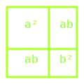
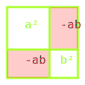

Como desativar armadilhas complexas com táticas algébricas simples.
\[ 2(3x - 4) + 5 = 7(x + 1) - 10 \]
\[ 6x - 8 + 5 = 7x + 7 - 10 \]
\[ 6x - 3 = 7x - 3 \Rightarrow x = 0 \]
Dominar a álgebra significa sobreviver onde outros falham: terminais bloqueados, cálculos de radiação, e sistemas de segurança complexos.
Decomponha expressões complexas, ótimo para desmontar armadilhas na wasteland.
\( a(b + c) = ab + ac \)
Enfrentando expressões mais complexas na wasteland matemática.
\( (a + b)(c + d) = ac + ad + bc + bd \)
Aplicações práticas para sua jornada na wasteland.
\( 3(x + 2) = 3 \cdot x + 3 \cdot 2 = 3x + 6 \)
Distribua o multiplicador externo (3) para cada termo dentro dos parênteses.
\( (x + 3)(x + 2) = x \cdot x + x \cdot 2 + 3 \cdot x + 3 \cdot 2 = x^2 + 2x + 3x + 6 =\)
\(= x^2 + 5x + 6 \)
Multiplique cada termo do primeiro parênteses por cada termo do segundo. Essencial para calcular áreas em planejamento de assentamentos.
DICA TÁTICA: Quando desmonta uma expressão distributiva, sempre verifique seu trabalho multiplicando cada termo externo por cada termo interno. Contabilize todos os produtos - uma omissão pode ser fatal na wasteland matemática.
\( x^a \cdot x^b = x^{a+b} \)
Multiplicação: some os expoentes
\( (x^a)^b = x^{a \cdot b} \)
Potência de potência: multiplique os expoentes
\( (x/y)^a = x^a / y^a \)
Potência de quociente: distribua o expoente
\( x^a \div x^b = x^{a-b} \)
Divisão: subtraia os expoentes
\( (x \cdot y)^a = x^a \cdot y^a \)
Potência de produto: distribua o expoente
\( x^{-a} = 1/x^a \)
Expoente negativo: inverta a base
Memorize estas leis para sobreviver a cálculos complexos quando cada segundo conta.
Fórmulas essenciais para modelar fenômenos da wasteland.
\( P = P_0(1+r)^t \)
\( A = A_0(1/2)^{t/h} \)
Exemplo prático: Se sua colônia começa com 20 pessoas e cresce 10% ao ano, após 5 anos terá:
\( P = 20 \cdot (1+0.1)^5 = 20 \cdot 1.1^5 = 20 \cdot 1.61 \approx 32 \text{ pessoas} \)
Padrões reconhecíveis que economizam tempo e recursos em cálculos complexos.
(a + b)² = a² + 2ab + b²
(a - b)² = a² - 2ab + b²
Exemplo: Expandir (x + 3)²
= x² + 2(x)(3) + 3²
= x² + 6x + 9
Exemplo: Expandir (2x - 5)²
= (2x)² - 2(2x)(5) + 5²
= 4x² - 20x + 25
Um padrão essencial para fatoração e simplificação de expressões.
a² - b² = (a + b)(a - b)
Exemplo 1: Fatorar x² - 4
= x² - 2²
= (x + 2)(x - 2)
Exemplo 2: Fatorar 9y² - 25
= (3y)² - 5²
= (3y + 5)(3y - 5)
Aplicação na wasteland: Decompor áreas complexas para cálculos de perímetros defensivos e divisão de território entre assentamentos.
Para calcular espaços tridimensionais de forma eficiente.
\( (a + b)^3 = a^3 + 3a^2b + 3ab^2 + b^3 \)
Aplicação na wasteland: Cálculo preciso de volume de bunkers, reservatórios de água e depósitos de suprimentos.
Simulações do "Vault-Tec" para cálculos volumétricos rápidos.
\( (x + 2)^3 = x^3 + 3x^2(2) + 3x(2)^2 + 2^3 \)
\( = x^3 + 6x^2 + 12x + 8 \)
Use esta fórmula para calcular o volume de um abrigo cúbico com extensão.
\( (x - 1)^3 = x^3 + 3x^2(-1) + 3x(-1)^2 + (-1)^3 \)
\( = x^3 - 3x^2 + 3x - 1 \)
Útil para calcular reduções de volume em projetos de engenharia.
Simulações do "Vault-Tec" para cálculos volumétricos rápidos.
\( (2x + y)^3 = (2x)^3 + 3(2x)^2(y) + 3(2x)(y)^2 + y^3 \)
\( = 8x^3 + 12x^2y + 6xy^2 + y^3 \)
Aplicável no dimensionamento de bunkers com diferentes proporções.
Treinamento de Sobrevivência: Calcule o volume do abrigo expresso como \( (3r + h)^3 \), onde \( r \) é o raio de proteção e \( h \) é a altura da blindagem.
Método para reduzir a complexidade e economizar recursos mentais em situações de estresse.
\(\frac{x^2 - 4x + 4}{x - 2}\)
Passos táticos para simplificação eficiente: